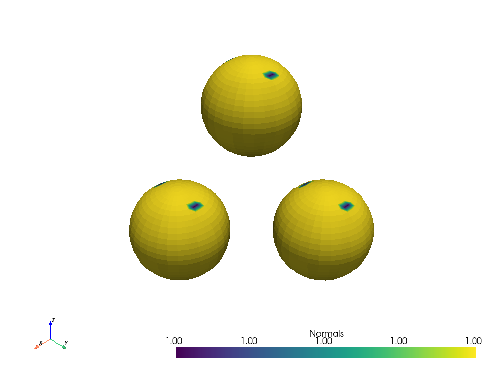

pyvista.DataSetFilters.merge#
- DataSetFilters.merge(grid=None, merge_points=True, tolerance=0.0, inplace=False, main_has_priority=True, progress_bar=False)[ソース]#
Join one or many other grids to this grid.
Grid is updated in-place by default.
Can be used to merge points of adjacent cells when no grids are input.
注釈
The
+operator between two meshes uses this filter with the default parameters. When the target mesh is already apyvista.UnstructuredGrid, in-place merging via+=is similarly possible.- Parameters:
- grid
vtk.UnstructuredGridorlistofvtk.UnstructuredGrids,optional Grids to merge to this grid.
- merge_pointsbool, default:
True Points in exactly the same location will be merged between the two meshes. Warning: this can leave degenerate point data.
- tolerance
float, default: 0.0 The absolute tolerance to use to find coincident points when
merge_points=True.- inplacebool, default:
False Updates grid inplace when True if the input type is an
pyvista.UnstructuredGrid.- main_has_prioritybool, default:
True When this parameter is true and merge_points is true, the arrays of the merging grids will be overwritten by the original main mesh.
- progress_barbool, default:
False Display a progress bar to indicate progress.
- grid
- Returns:
pyvista.UnstructuredGridMerged grid.
Notes
When two or more grids are joined, the type and name of each array must match or the arrays will be ignored and not included in the final merged mesh.
Examples
Merge three separate spheres into a single mesh.
>>> import pyvista >>> sphere_a = pyvista.Sphere(center=(1, 0, 0)) >>> sphere_b = pyvista.Sphere(center=(0, 1, 0)) >>> sphere_c = pyvista.Sphere(center=(0, 0, 1)) >>> merged = sphere_a.merge([sphere_b, sphere_c]) >>> merged.plot()
